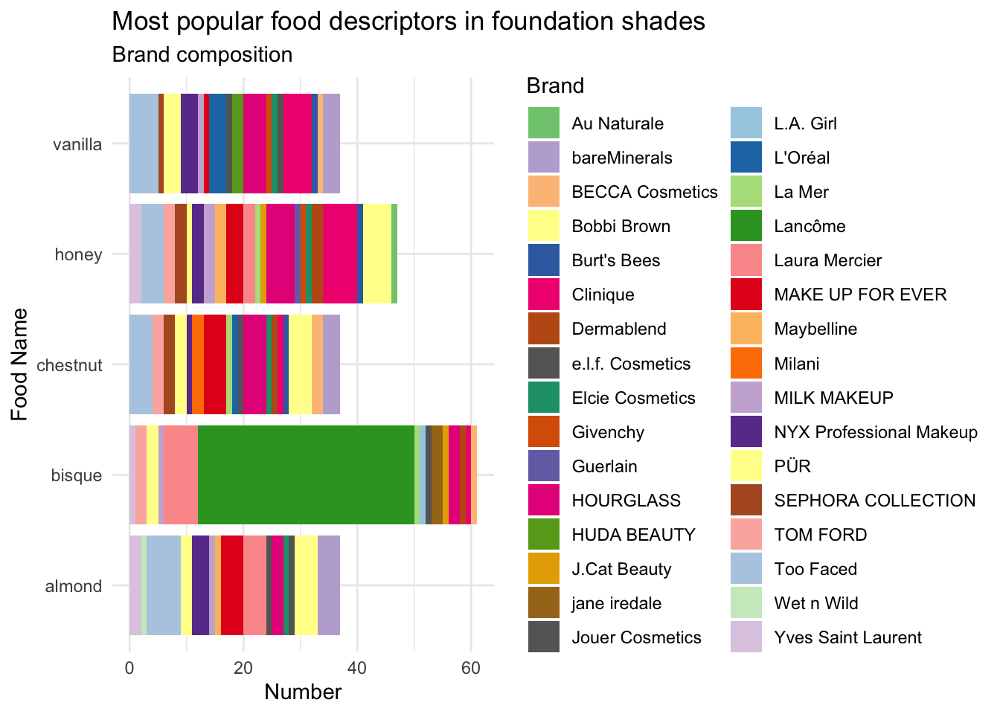
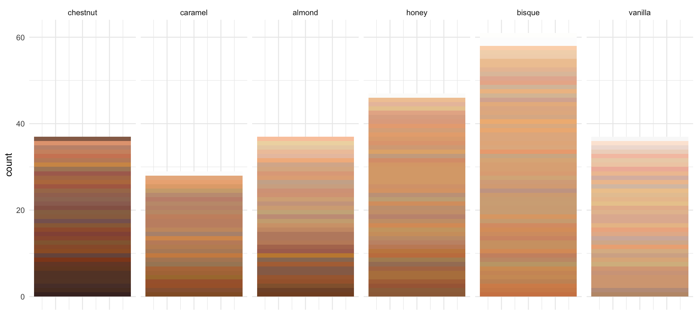

Last updated: 2021-03-30
Checks: 7 0
Knit directory: TidyTuesday/
This reproducible R Markdown analysis was created with workflowr (version 1.6.2). The Checks tab describes the reproducibility checks that were applied when the results were created. The Past versions tab lists the development history.
Great! Since the R Markdown file has been committed to the Git repository, you know the exact version of the code that produced these results.
Great job! The global environment was empty. Objects defined in the global environment can affect the analysis in your R Markdown file in unknown ways. For reproduciblity it’s best to always run the code in an empty environment.
The command set.seed(20210215) was run prior to running the code in the R Markdown file. Setting a seed ensures that any results that rely on randomness, e.g. subsampling or permutations, are reproducible.
Great job! Recording the operating system, R version, and package versions is critical for reproducibility.
Nice! There were no cached chunks for this analysis, so you can be confident that you successfully produced the results during this run.
Great job! Using relative paths to the files within your workflowr project makes it easier to run your code on other machines.
Great! You are using Git for version control. Tracking code development and connecting the code version to the results is critical for reproducibility.
The results in this page were generated with repository version 16b1d82. See the Past versions tab to see a history of the changes made to the R Markdown and HTML files.
Note that you need to be careful to ensure that all relevant files for the analysis have been committed to Git prior to generating the results (you can use wflow_publish or wflow_git_commit). workflowr only checks the R Markdown file, but you know if there are other scripts or data files that it depends on. Below is the status of the Git repository when the results were generated:
Ignored files:
Ignored: .Rhistory
Ignored: .Rproj.user/
Unstaged changes:
Modified: analysis/gender.Rmd
Note that any generated files, e.g. HTML, png, CSS, etc., are not included in this status report because it is ok for generated content to have uncommitted changes.
These are the previous versions of the repository in which changes were made to the R Markdown (analysis/makeup.Rmd) and HTML (docs/makeup.html) files. If you’ve configured a remote Git repository (see ?wflow_git_remote), click on the hyperlinks in the table below to view the files as they were in that past version.
| File | Version | Author | Date | Message |
|---|---|---|---|---|
| Rmd | 16b1d82 | Nhi Hin | 2021-03-30 | wflow_publish(“analysis/makeup.Rmd”) |
Skin complexion makeup analysis (pudding.cool): https://pudding.cool/2021/03/foundation-names/
TidyTuesday page: https://github.com/rfordatascience/tidytuesday/tree/master/data/2021/2021-03-30
Data collection and preprocessing details: https://github.com/the-pudding/data/tree/master/foundation-names
sephora <- readr::read_csv('https://raw.githubusercontent.com/rfordatascience/tidytuesday/master/data/2021/2021-03-30/sephora.csv')
── Column specification ────────────────────────────────────────────────────────
cols(
brand = col_character(),
product = col_character(),
url = col_character(),
description = col_character(),
imgSrc = col_character(),
imgAlt = col_character(),
name = col_character(),
specific = col_character()
)ulta <- readr::read_csv('https://raw.githubusercontent.com/rfordatascience/tidytuesday/master/data/2021/2021-03-30/ulta.csv')
── Column specification ────────────────────────────────────────────────────────
cols(
brand = col_character(),
product = col_character(),
url = col_character(),
description = col_character(),
imgSrc = col_character(),
imgAlt = col_character(),
name = col_character(),
specific = col_character()
)allCategories <- readr::read_csv('https://raw.githubusercontent.com/rfordatascience/tidytuesday/master/data/2021/2021-03-30/allCategories.csv')
── Column specification ────────────────────────────────────────────────────────
cols(
brand = col_character(),
product = col_character(),
url = col_character(),
imgSrc = col_character(),
name = col_character(),
categories = col_character(),
specific = col_character(),
hex = col_character(),
lightness = col_double()
)allShades <- readr::read_csv('https://raw.githubusercontent.com/rfordatascience/tidytuesday/master/data/2021/2021-03-30/allShades.csv')
── Column specification ────────────────────────────────────────────────────────
cols(
brand = col_character(),
product = col_character(),
url = col_character(),
description = col_character(),
imgSrc = col_character(),
imgAlt = col_character(),
name = col_character(),
specific = col_character(),
colorspace = col_character(),
hex = col_character(),
hue = col_double(),
sat = col_double(),
lightness = col_double()
)allNumbers <- readr::read_csv('https://raw.githubusercontent.com/rfordatascience/tidytuesday/master/data/2021/2021-03-30/allNumbers.csv')
── Column specification ────────────────────────────────────────────────────────
cols(
brand = col_character(),
product = col_character(),
name = col_character(),
specific = col_character(),
lightness = col_double(),
hex = col_character(),
lightToDark = col_logical(),
numbers = col_double(),
id = col_double()
)allCategories dataset looks like this. It contains information scraped from both Ulta and Sephora.allCategories %>% dplyr::select(brand, name, categories, hex, lightness) # A tibble: 5,307 x 5
brand name categories hex lightness
<chr> <chr> <chr> <chr> <dbl>
1 BECCA Cosmetics shell gem #EFCBA4 0.790
2 BECCA Cosmetics linen textile #F3CEB0 0.822
3 BECCA Cosmetics alabaster gem #F2CBB4 0.827
4 BECCA Cosmetics porcelain misc #F6C8A7 0.810
5 BECCA Cosmetics ivory gem, color #F0C4AB 0.806
6 BECCA Cosmetics sand rock #F2C79D 0.782
7 BECCA Cosmetics cashmere textile #DFB38A 0.708
8 BECCA Cosmetics vanilla food #EEC29C 0.773
9 BECCA Cosmetics bisque food #EAB498 0.757
10 BECCA Cosmetics cashew food #DDAD8C 0.708
# … with 5,297 more rowsbrands <- allCategories %>%
dplyr::group_by(brand) %>%
dplyr::summarise(n = n()) %>%
dplyr::arrange(desc(n))
brands# A tibble: 93 x 2
brand n
<chr> <int>
1 bareMinerals 370
2 Tarte 242
3 Clinique 230
4 MAKE UP FOR EVER 170
5 Laura Mercier 162
6 Too Faced 161
7 Estée Lauder 160
8 SEPHORA COLLECTION 159
9 Dior 153
10 L'Oréal 153
# … with 83 more rowsdim(brands)[1] 93 2There are 93 represented in this dataset. Multiple products are available for each brand.
In terms of categories, there are also many different categories including food, gem, etc. Because of how substantial the dataset is, it might be easier if we focus on just one category for now.
foodSubset <- allCategories %>% dplyr::filter(categories == "food")
dim(foodSubset)[1] 682 9foodSubset %>% dplyr::select(brand, name, hex, lightness)# A tibble: 682 x 4
brand name hex lightness
<chr> <chr> <chr> <dbl>
1 BECCA Cosmetics vanilla #EEC29C 0.773
2 BECCA Cosmetics bisque #EAB498 0.757
3 BECCA Cosmetics cashew #DDAD8C 0.708
4 BECCA Cosmetics noisette #D49971 0.637
5 BECCA Cosmetics cardamom #79442C 0.324
6 BECCA Cosmetics coconut #754127 0.306
7 BECCA Cosmetics clove #7B472E 0.331
8 BECCA Cosmetics truffle #713E2A 0.304
9 BECCA Cosmetics cacao #4F322C 0.241
10 BECCA Cosmetics chestnut #472D29 0.220
# … with 672 more rowsname column.foodSubset$name %>%
table %>%
as.data.frame %>%
set_colnames(c("name", "n")) %>%
dplyr::arrange(desc(n)) name n
1 bisque 61
2 honey 47
3 almond 37
4 chestnut 37
5 vanilla 37
6 caramel 29
7 cocoa 28
8 nutmeg 27
9 cinnamon 23
10 toffee 22
11 truffle 22
12 hazelnut 19
13 cashew 15
14 brown sugar 14
15 pecan 13
16 praline 13
17 butterscotch 10
18 ganache 9
19 ginger 9
20 honey honey 9
21 spice 8
22 wheat 8
23 chocolate 7
24 dark chocolate 7
25 clove 6
26 coconut 6
27 butter pecan 5
28 cacao 5
29 carob 5
30 custard 5
31 toasted almond 5
32 biscuit 4
33 brulee 4
34 cream caramel 4
35 cream whip 4
36 honey wheat 4
37 oat 4
38 buttercream 3
39 macadamia 3
40 shortbread 3
41 tiramisu 3
42 toasted wheat 3
43 amaretti 2
44 angel food 2
45 au chocolat 2
46 baklava 2
47 cheesecake 2
48 chocolate mousse 2
49 chocolate truffle 2
50 cream puff 2
51 dulce de leche 2
52 gingerbread 2
53 honey bisque 2
54 hot fudge 2
55 macaroon 2
56 maple sugar 2
57 meringue 2
58 milk chocolate 2
59 nutty 2
60 panna cotta 2
61 peach 2
62 taffy 2
63 toast 2
64 toasted coconut 2
65 tres leches 2
66 vanille 2
67 vanillé 2
68 almond peach 1
69 apple pie 1
70 apricot 1
71 banana 1
72 beignet 1
73 biscotti 1
74 brownie 1
75 cardamom 1
76 cardamon 1
77 caviar 1
78 churro 1
79 cocao 1
80 creme brulee 1
81 crème brulee 1
82 crème brulée 1
83 crepe 1
84 ganace 1
85 hint of almond 1
86 hint of butterscotch 1
87 hint of caramel 1
88 hint of cocoa 1
89 hint of ginger 1
90 hint of honey 1
91 hint of marshmallow 1
92 hint of nutmeg 1
93 hint of pecan 1
94 hint of toast 1
95 hint of toffee 1
96 hint of truffle 1
97 honey chestnut 1
98 lava cake 1
99 noisette 1
100 nut 1
101 peaches n cream 1
102 peanut butter cup 1
103 sesame 1
104 shortcake 1
105 spiced almond 1
106 spiced toffee 1
107 toasted caramel 1
108 toasted chesnut 1
109 toasty toffee 1
110 toffee peach 1
111 toffee spice 1
112 true caramel 1bisque, honey, almond, chestnut, and vanilla appear the most common. Is this due to the same brands, or does it seem to be common across all brands?foodSubset_summary <- foodSubset %>%
dplyr::filter(name %in% c("bisque",
"honey",
"almond",
"chestnut",
"vanilla")) %>%
dplyr::group_by(brand, name) %>%
dplyr::summarise(n = n()) %>%
dplyr::arrange(name, desc(n)) `summarise()` has grouped output by 'brand'. You can override using the `.groups` argument.foodSubset_summary# A tibble: 86 x 3
# Groups: brand [32]
brand name n
<chr> <chr> <int>
1 Too Faced almond 6
2 bareMinerals almond 4
3 Bobbi Brown almond 4
4 Laura Mercier almond 4
5 MAKE UP FOR EVER almond 4
6 NYX Professional Makeup almond 3
7 HOURGLASS almond 2
8 PÜR almond 2
9 Yves Saint Laurent almond 2
10 e.l.f. Cosmetics almond 1
# … with 76 more rows# Get a large number of distinct colours, see
# https://stackoverflow.com/questions/15282580/how-to-generate-a-number-of-most-distinctive-colors-in-r
library(RColorBrewer)
n <- 60
qual_col_pals = brewer.pal.info[brewer.pal.info$category == 'qual',]
col_vector = unlist(mapply(brewer.pal, qual_col_pals$maxcolors, rownames(qual_col_pals)))
foodSubset_summary %>%
ggplot(aes(x = name, y = n, fill = brand)) +
geom_bar(stat = "identity") +
coord_flip() +
scale_fill_manual(values = col_vector) +
labs(y = "Number", x = "Food Name", fill = "Brand") +
ggtitle("Most popular food descriptors in foundation shades",
subtitle = "Brand composition") 
test <- foodSubset %>%
dplyr::filter(name %in% c("bisque",
"honey",
"almond",
"chestnut",
"vanilla",
"caramel")) %>%
split(., f=.$name) %>%
lapply(function(x){
x %>% dplyr::arrange(desc(as.numeric(lightness)))
}) %>%
dplyr::bind_rows(.id = "name") %>%
ggplot(aes(x = n, fill = factor(hex, levels = unique(hex)))) +
geom_bar(stat = "count") +
scale_fill_identity() +
facet_wrap(~factor(name, levels = c("chestnut",
"caramel",
"almond",
"honey",
"bisque",
"vanilla")), nrow = 1) +
theme(axis.title.x=element_blank(),
axis.text.x=element_blank(),
axis.ticks.x=element_blank())
test
sessionInfo()R version 4.0.3 (2020-10-10)
Platform: x86_64-apple-darwin17.0 (64-bit)
Running under: macOS Mojave 10.14.6
Matrix products: default
BLAS: /Library/Frameworks/R.framework/Versions/4.0/Resources/lib/libRblas.dylib
LAPACK: /Library/Frameworks/R.framework/Versions/4.0/Resources/lib/libRlapack.dylib
locale:
[1] en_AU.UTF-8/en_AU.UTF-8/en_AU.UTF-8/C/en_AU.UTF-8/en_AU.UTF-8
attached base packages:
[1] stats graphics grDevices utils datasets methods base
other attached packages:
[1] RColorBrewer_1.1-2 ggplot2_3.3.3 reshape2_1.4.4 readr_1.4.0
[5] magrittr_2.0.1 dplyr_1.0.4 workflowr_1.6.2
loaded via a namespace (and not attached):
[1] Rcpp_1.0.6 highr_0.8 pillar_1.4.7 compiler_4.0.3
[5] later_1.1.0.1 git2r_0.28.0 plyr_1.8.6 tools_4.0.3
[9] digest_0.6.27 evaluate_0.14 lifecycle_0.2.0 tibble_3.0.6
[13] gtable_0.3.0 pkgconfig_2.0.3 rlang_0.4.10 rstudioapi_0.13
[17] cli_2.3.0 curl_4.3 yaml_2.2.1 xfun_0.21
[21] withr_2.4.1 stringr_1.4.0 knitr_1.31 generics_0.1.0
[25] fs_1.5.0 vctrs_0.3.6 hms_1.0.0 rprojroot_2.0.2
[29] grid_4.0.3 tidyselect_1.1.0 glue_1.4.2 R6_2.5.0
[33] fansi_0.4.2 rmarkdown_2.6 farver_2.0.3 purrr_0.3.4
[37] whisker_0.4 scales_1.1.1 promises_1.1.1 ellipsis_0.3.1
[41] htmltools_0.5.1.1 assertthat_0.2.1 colorspace_2.0-0 httpuv_1.5.5
[45] labeling_0.4.2 utf8_1.1.4 stringi_1.5.3 munsell_0.5.0
[49] crayon_1.4.1